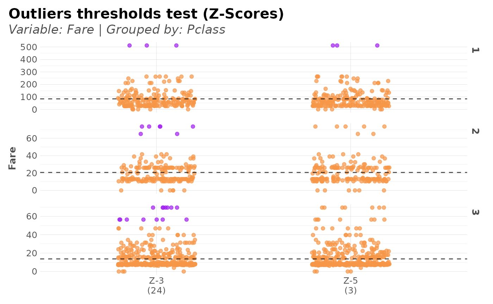

Test several Z-score thresholds to visualize outliers. Tidyverse friendly.
outlier_zscore_plot(df, var, group = NULL, thresh = c(2, 3, 5), top = 5)
Arguments
| df | Dataframe. |
|---|---|
| var | Numeric variable. |
| group | Categorical variable. Grouping variable. |
| thresh | Numeric vector. Z-Score threshold for n standard deviations. |
| top | Integer. Show only n most frequent categorical values when
using the |
Value
ggplot2 object
See also
Other Outliers:
outlier_turkey(),
outlier_zscore(),
winsorize()
Examples
#> [,1] [,2] [,3] [,4] #> [1,] 3 35.33443 235.1411 40.25220 #> [2,] 5 58.89071 391.9019 67.08699#> # A tibble: 6 x 6 #> Fare `Z-3` `Z-5` outlier_std outlier_mean outlier_group #> <dbl> <lgl> <lgl> <dbl> <dbl> <int> #> 1 7.25 FALSE FALSE 11.8 13.7 3 #> 2 71.3 FALSE FALSE 78.4 84.2 1 #> 3 7.92 FALSE FALSE 11.8 13.7 3 #> 4 53.1 FALSE FALSE 78.4 84.2 1 #> 5 8.05 FALSE FALSE 11.8 13.7 3 #> 6 8.46 FALSE FALSE 11.8 13.7 3